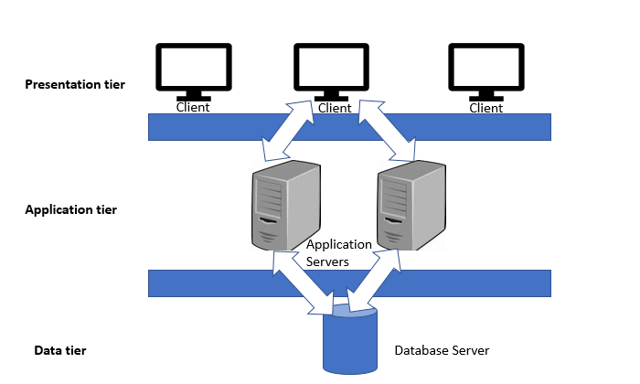
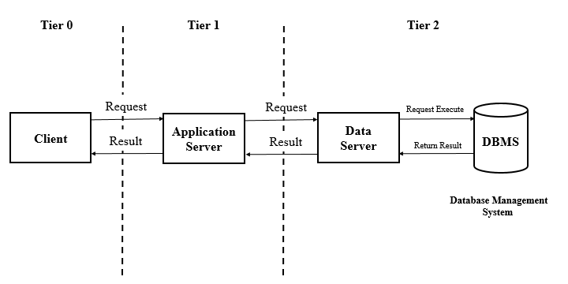
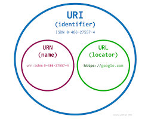

Client & Server
In the context of software, the terms "client" and "server" refer to different parts of a distributed computing system. A distributed computing system is a network of computers that work together to perform a specific task or provide a service. In this system, the client and server are two separate entities that communicate with each other to accomplish their respective tasks.
Client
A client is a piece of software that runs on a user's computer or device and interacts with a server to obtain information or perform an action. The client sends requests to the server, which responds with the requested information or action. The client can be a web browser, a mobile app, or a desktop application. Clients are often designed to provide a user interface for interacting with the server and presenting the results to the user in a user-friendly manner.
Server
A server, on the other hand, is a computer program or device that provides a service or resource to other computers or devices on the network. Servers typically run continuously in the background and listen for requests from clients. When a request is received, the server processes it and sends a response back to the client. Servers can be dedicated hardware devices, virtual machines, or even software programs running on a desktop computer.
The communication between a client and server is usually done using a protocol such as HTTP, TCP/IP, or FTP. The client sends a request to the server using this protocol, and the server responds with the requested information or action. The client and server can communicate with each other over a local network or over the internet.
Client-server architecture

Client-server architecture is a type of distributed computing architecture in which the client software interacts with the server software to access services or resources. In this architecture, the client and server software run on different machines and communicate with each other over a network.
The client-server architecture consists of two main components: the client and the server. The client is the front-end component that runs on the user's machine and interacts with the user to obtain input and display results. The server is the back-end component that runs on a dedicated machine and provides services or resources to clients.
The client sends requests to the server, and the server responds with the requested information or action. The server is responsible for managing and storing data, performing computations, and providing services to clients. The client is responsible for presenting the information or results obtained from the server to the user in a user-friendly manner.
There are different types of client-server architectures, including two-tier, three-tier, and n-tier architectures. In a two-tier architecture, the client communicates directly with the server, while in a three-tier architecture, an intermediate layer is added between the client and server. The intermediate layer is responsible for processing requests, managing data, and providing security. In an n-tier architecture, multiple layers are added between the client and server to provide more scalability, flexibility, and modularity.
Some advantages of the client-server architecture include:
- Scalability: The server can handle multiple requests from different clients at the same time, allowing the system to scale as the number of clients grows.
- Centralized management: All data and services are managed on the server, making it easier to manage and maintain the system.
- Security: The server can enforce security policies and control access to resources, making it easier to protect data and prevent unauthorized access.
- Flexibility: Different types of clients can access the same services or resources provided by the server, allowing for greater flexibility in the design of the system.
API Testing: What It Is, Why It’s Important & How to Do It
The global API testing market is projected to reach 1.8 billion USD by 2026, up from 641.6 Million in 2020, according to a report by Global Industry Analysts Inc.
This market growth corresponds to the rise in cloud applications and interconnected platforms that require application programming interfaces (APIs). More APIs mean more testing to determine that they meet expectations for functionality, reliability, performance, and security. Without this testing, an API may fail to perform as expected, which can impact many softwares and services.
please refer the following links
- Global Industry Analysts Predicts the World API Testing Market to Reach $1.8 Billion by 2026
- API Testing World market report MCP 10331
What is API testing?
API testing is the process of sending requests to an API and monitoring the responses to ensure its behaving as expected. API testing is designed to assess the functionality, reliability, performance, and security of an API, and is therefore an essential part of the API development lifecycle.
Software application development is dominated by the three-layered architecture approach, which is an architecture made up of a presentation layer, business logic layer, and database layer.

The business logic layer contains the core functionality, or components, of the application. It must take information inputted by the user from the presentation layer, query the database layer and transform that data according to the business logic, and present the results back to the user via the presentation layer. But the business logic layer must also communicate with other applications as well as human users. To do so, it uses an API.

So API testing is designed to validate the business logic as well as the performance, security, and other aspects of the application. API testing does not focus on the individual components of an application, like unit testing, or the look and feel of the application, like user interface (UI) testing, but on what the application does.

Types of API Testing
- API Documentation testing
- Functional testing. These API tests are designed to check that an API returns the right response for a given request.
- Load testing. This type of API test gauges how an API handles a large volume of requests over a short period.
- Runtime and error detection testing. These API tests are designed to evaluate the actual running of the API and typically focus on monitoring, execution errors, resource leaks, or error detection.
- Security testing. These tests assess how an API responds to and resists cyberattacks.
- Penetration Testing. Penetration tests involve users with limited API knowledge trying to attack the API, which enables testers to assess the threat vector from an outside perspective.
- Fuzz Testing. This type of API test sends a large number of randomized requests to see if your API responds with errors, processes any of these inputs incorrectly, or crashes.
- Validation testing. Validation tests are run late in the testing stage to verify the behavior and efficiency of the API.
Why is API testing important?
API testing is important for ensuring that your API performs as expected when faced with a wide variety of expected and unexpected requests. This process is designed to not only test the API’s functionality — but also its reliability, performance, and security.
API testing is also important because it offers several advantages over other types of testing, like unit and UI testing.
For example, unit tests are designed to verify the functionality of individual components within a single application whereas API tests are designed to verify that all system components function as intended. This broader test coverage makes it easier to identify any bugs in the unit, database, and server levels.
API tests are also faster to run and more isolated than UI tests, which makes it quicker and easier to identify and resolve bugs. According to data from Andersen Lab, a UI test runs for approximately seven minutes while an API test runs for 12 seconds. Meaning, an API test is about 35 times faster than a UI test.
Perhaps most importantly, API testing allows developer operations, quality assurance, development, and other teams to begin testing an application’s core functionality before the user interface is ready. This enables them to identify any errors or weaknesses early on in the development process. If identified later in the process, these errors and weaknesses in the build can be costly to fix, requiring large amounts of code to be rewritten and significantly delaying the product’s release.
How to Do API Testing
1. Review the API specification.
Before you start testing, you need to first understand the purpose of the API, how the API functions, and what results to expect when using the API. To do so, you can review the API specification.
For example, if you’re testing an HTTP API, then you can review the OpenAPI specification, which defines a standard, programming language-agnostic interface description for HTTP APIs. This specification details all the HTTP API’s objects, values, and parameters, how the objects are called, what each object does, and how they can be used together. The section below details how the Request Body Object is supposed to function, what its fixed fields are, what to expect when using this function, and request body examples.
2. Determine API testing requirements.
Next, you need to determine the testing requirements of the API. This will require you to understand the API’s target consumer, its features and functions, and the workflow of the application as well as the aspects, priorities, and problems you’re testing for. For example, maybe you want to verify that HTTP headers are as expected or that a response is received within a reasonable period of time, as defined by the test plan.
You’ll also need to know the desired output — which could be a 2XX HTTP status code or a JSON object, for example.
3. Define input parameters.
Before calling an API, you must define input parameters. These parameters pass needed information to the API to enable it to perform its function and therefore are necessary for determining whether the API performs as expected. For example, a REST API can accept header, query, and rest body parameters, among other input parameter types.
Before beginning API testing, it’s important to plan out all possible input combinations.
4. Create positive and negative tests.
To assess whether an API functions as expected, you should run a combination of positive and negative tests.
Positive tests are designed to check the basic functionality of the API using required parameters as well as extra functionality using optional parameters.
Negative tests are designed to check how the API responds to prohibited operations using valid and invalid user input, like trying to input a username that already exists or a username that is null.
5. Select an API testing tool.
Now you’re ready to select an API testing tool that can help automate or simplify the API testing process. When evaluating different API testing tools, it’s important to know what kind of API you’ll be testing, what kind of tests you’ll be running, and what your budget is.
10 Best API Testing Tools for Building Functional, Secure Applications
- Postman
- KarateDSL
- Rest Assured
- SoapUI
- Fiddler
- Katalon Studio
- Assertible
- Tricentis Tosca
- Swagger
- Apache JMeter
for more info please refer API Testing: What It Is, Why It’s Important & How to Do It
What is an API? (Application Programming Interface)
API is the acronym for Application Programming Interface, which is a software intermediary that allows two applications to talk to each other. Each time you use an app like Facebook, send an instant message, or check the weather on your phone, you’re using an API.
What Is an Example of an API?
When you use an application on your mobile phone, the application connects to the Internet and sends data to a server. The server then retrieves that data, interprets it, performs the necessary actions and sends it back to your phone. The application then interprets that data and presents you with the information you wanted in a readable way. This is what an API is - all of this happens via API.
Imagine you’re sitting at a table in a restaurant with a menu of choices to order from. The kitchen is the part of the “system” that will prepare your order. What is missing is the critical link to communicate your order to the kitchen and deliver your food back to your table. That’s where the waiter or API comes in. The waiter is the messenger – or API – that takes your request or order and tells the kitchen – the system – what to do. Then the waiter delivers the response back to you; in this case, it is the food.
Here is a real-life API example. You may be familiar with the process of searching flights online. Just like the restaurant, you have a variety of options to choose from, including different cities, departure and return dates, and more. Let us imagine that you’re booking you are flight on an airline website. You choose a departure city and date, a return city and date, cabin class, as well as other variables. In order to book your flight, you interact with the airline’s website to access their database and see if any seats are available on those dates and what the costs might be.
What is REST?
Representational state transfer is a software architectural style that describes a uniform interface between physically separate components, often across the Internet in a Client-Server architecture. ---Wikipedia
REST stands for Representational State Transfer, a term coined by Roy Fielding in 2000. It is an architecture style for designing loosely coupled applications over the network, that is often used in the development of web services.
REST does not enforce any rule regarding how it should be implemented at the lower level, it just put high-level design guidelines and leaves us to think of our own implementation.

Architectural Constraints
REST defines 6 architectural constraints which make any web service – a truly RESTful API.
- Uniform interface
- Client–server
- Stateless
- Cacheable
- Layered system
- Code on demand (optional)
Uniform interface
A resource in the system should have only one logical URI, and that should provide a way to fetch related or additional data.
Any single resource should not be too large and contain each and everything in its representation. Whenever relevant, a resource should contain links (HATEOAS) pointing to relative URIs to fetch related information.
Client–server
What uis client?
A client is a computer hardware or software that access a service made available by a server.
What is server?
A server is a physical computer dedicated to run services to server the needs of the coputers. Depending on the service that is running it colud be a File server,database server, print server and web server.
This constraint essentially means that client applications and server applications MUST be able to evolve separately without any dependency on each other. A client should know only resource URIs, and that’s all. Today, this is standard practice in web development, so nothing fancy is required from your side. Keep it simple.
Servers and clients may also be replaced and developed independently, as long as the interface between them is not altered.
Stateless
Make all client-server interactions stateless. The server will not store anything about the latest HTTP request the client made. It will treat every request as new. No session, no history.
If the client application needs to be a stateful application for the end-user, where the user logs in once and does other authorized operations after that, then each request from the client should contain all the information necessary to service the request – including authentication and authorization details.
No client context shall be stored on the server between requests. The client is responsible for managing the state of the application.
Cacheable
In today’s world, the caching of data and responses is of utmost importance wherever they are applicable/possible. Caching brings performance improvement for the client-side and better scope for scalability for a server because the load has been reduced.
In REST, caching shall be applied to resources when applicable, and then these resources MUST declare themselves cacheable. Caching can be implemented on the server or client-side.
Well-managed caching partially or completely eliminates some client-server interactions, further improving scalability and performance.
Layered system
REST allows you to use a layered system architecture where you deploy the APIs on server A, and store data on server B and authenticate requests in Server C, for example. A client cannot ordinarily tell whether it is connected directly to the end server or an intermediary along the way.
Code on demand (optional)
Well, this constraint is optional. Most of the time, you will be sending the static representations of resources in the form of XML or JSON. But when you need to, you are free to return executable code to support a part of your application, e.g., clients may call your API to get a UI widget rendering code. It is permitted.
URI examples
http://www.appdomain.com/users
http://www.appdomain.com/users?size=20&page=5
http://www.appdomain.com/users/123
http://www.appdomain.com/users/123/address
refer the link
HTTP request methods
HTTP defines a set of request methods to indicate the desired action to be performed for a given resource. Although they can also be nouns, these request methods are sometimes referred to as HTTP verbs. Each of them implements a different semantic, but some common features are shared by a group of them: e.g. a request method can be safe, idempotent, or cacheable.
GET
The GET method requests a representation of the specified resource. Requests using GET should only retrieve data.
Syntax
GET /index.html
HEAD
The HTTP HEAD method requests the headers that would be returned if the HEAD request's URL was instead requested with the HTTP GET method. For example, if a URL might produce a large download, a HEAD request could read its Content-Length header to check the filesize without actually downloading the file.
Warning: A response to a HEAD method should not have a body. If it has one anyway, that body must be ignored: any representation headers that might describe the erroneous body are instead assumed to describe the response which a similar GET request would have received.
Syntax
HEAD /index.html
POST
The POST method submits an entity to the specified resource, often causing a change in state or side effects on the server.
The HTTP POST method sends data to the server. The type of the body of the request is indicated by the Content-Type header.
The difference between PUT and POST is that PUT is idempotent: calling it once or several times successively has the same effect (that is no side effect), where successive identical POST may have additional effects, like passing an order several times.
A POST request is typically sent via an HTML form and results in a change on the server. In this case, the content type is selected by putting the adequate string in the enctype attribute of the <form> element or the formenctype attribute of the <input> or <button> elements:
- application/x-www-form-urlencoded: the keys and values are encoded in key-value tuples separated by '&', with a '=' between the key and the value. Non-alphanumeric characters in both keys and values are percent encoded: this is the reason why this type is not suitable to use with binary data (use multipart/form-data instead)
- multipart/form-data: each value is sent as a block of data ("body part"), with a user agent-defined delimiter ("boundary") separating each part. The keys are given in the Content-Disposition header of each part.
- text/plain
When the POST request is sent via a method other than an HTML form — like via an XMLHttpRequest — the body can take any type. As described in the HTTP 1.1 specification, POST is designed to allow a uniform method to cover the following functions:
- Annotation of existing resources
- Posting a message to a bulletin board, newsgroup, mailing list, or similar group of articles;
- Adding a new user through a signup modal;
- Providing a block of data, such as the result of submitting a form, to a data-handling process;
- Extending a database through an append operation.
A simple form using the default application/x-www-form-urlencoded content type:
POST /test HTTP/1.1
Host: foo.example
Content-Type: application/x-www-form-urlencoded
Content-Length: 27
field1=value1&field2=value2
A form using the multipart/form-data content type:
POST /test HTTP/1.1
Host: foo.example
Content-Type: multipart/form-data;boundary="boundary"
--boundary
Content-Disposition: form-data; name="field1"
value1
--boundary
Content-Disposition: form-data; name="field2"; filename="example.txt"
value2
--boundary--
PUT
The HTTP PUT request method creates a new resource or replaces a representation of the target resource with the request payload.
The difference between PUT and POST is that PUT is idempotent: calling it once or several times successively has the same effect (that is no side effect), whereas successive identical POST requests may have additional effects, akin to placing an order several times.
Syntax
PUT /new.html HTTP/1.1
Host: example.com
Content-type: text/html
Content-length: 16
<p>New File</p>
Responses
If the target resource does not have a current representation and the PUT request successfully creates one, then the origin server must inform the user agent by sending a 201 (Created) response.
HTTP/1.1 201 Created
Content-Location: /new.html
If the target resource does have a current representation and that representation is successfully modified in accordance with the state of the enclosed representation, then the origin server must send either a 200 (OK) or a 204 (No Content) response to indicate successful completion of the request.
HTTP/1.1 204 No Content
Content-Location: /existing.html
DELETE
The HTTP DELETE request method deletes the specified resource.
Syntax
DELETE /file.html HTTP/1.1
Request
DELETE /file.html HTTP/1.1
Host: example.com
Response
If a DELETE method is successfully applied, there are several response status codes possible:
- A 202 (Accepted) status code if the action will likely succeed but has not yet been enacted.
- A 204 (No Content) status code if the action has been enacted and no further information is to be supplied.
- A 200 (OK) status code if the action has been enacted and the response message includes a representation describing the status.
PATCH
The HTTP PATCH request method applies partial modifications to a resource.
PATCH is somewhat analogous to the "update" concept found in CRUD (in general, HTTP is different than CRUD, and the two should not be confused).
A PATCH request is considered a set of instructions on how to modify a resource. Contrast this with PUT; which is a complete representation of a resource.
A PATCH is not necessarily idempotent, although it can be. Contrast this with PUT; which is always idempotent. The word "idempotent" means that any number of repeated, identical requests will leave the resource in the same state. For example if an auto-incrementing counter field is an integral part of the resource, then a PUT will naturally overwrite it (since it overwrites everything), but not necessarily so for PATCH.
Request
PATCH /file.txt HTTP/1.1
Host: www.example.com
Content-Type: application/example
If-Match: "e0023aa4e"
Content-Length: 100
[description of changes]
Response
HTTP/1.1 204 No Content
Content-Location: /file.txt
ETag: "e0023aa4f"
HTTP response status codes
HTTP response status codes indicate whether a specific HTTP request has been successfully completed. Responses are grouped in five classes:
- Information responses(100-199)
- Successful responses(200-299)
- Redirection messages(300-399)
- Client error responses(400-499)
- Server error responses(500-599)
Successful responses
200 OK
The request succeeded. The result meaning of "success" depends on the HTTP method:
- GET: The resource has been fetched and transmitted in the message body.
- HEAD: The representation headers are included in the response without any message body.
- PUT or POST: The resource describing the result of the action is transmitted in the message body.
- TRACE: The message body contains the request message as received by the server.
201 Created
The request succeeded, and a new resource was created as a result. This is typically the response sent after POST requests, or some PUT requests.
202 Accepted
The request has been received but not yet acted upon. It is noncommittal, since there is no way in HTTP to later send an asynchronous response indicating the outcome of the request. It is intended for cases where another process or server handles the request, or for batch processing.
204 No Content
There is no content to send for this request, but the headers may be useful. The user agent may update its cached headers for this resource with the new ones.
Redirection messages
301 Moved Permanently
The URL of the requested resource has been changed permanently. The new URL is given in the response.
302 Found
This response code means that the URI of requested resource has been changed temporarily. Further changes in the URI might be made in the future. Therefore, this same URI should be used by the client in future requests.
Client error responses
400 Bad Request
The server cannot or will not process the request due to something that is perceived to be a client error (e.g., malformed request syntax, invalid request message framing, or deceptive request routing).
401 Unauthorized
Although the HTTP standard specifies "unauthorized", semantically this response means "unauthenticated". That is, the client must authenticate itself to get the requested response.
403 Forbidden
The client does not have access rights to the content; that is, it is unauthorized, so the server is refusing to give the requested resource. Unlike 401 Unauthorized, the client's identity is known to the server.
404 Not Found
The server can not find the requested resource. In the browser, this means the URL is not recognized. In an API, this can also mean that the endpoint is valid but the resource itself does not exist. Servers may also send this response instead of 403 Forbidden to hide the existence of a resource from an unauthorized client. This response code is probably the most well known due to its frequent occurrence on the web.
405 Method Not Allowed
The request method is known by the server but is not supported by the target resource. For example, an API may not allow calling DELETE to remove a resource.
408 Request Timeout
This response is sent on an idle connection by some servers, even without any previous request by the client. It means that the server would like to shut down this unused connection. This response is used much more since some browsers, like Chrome, Firefox 27+, or IE9, use HTTP pre-connection mechanisms to speed up surfing. Also note that some servers merely shut down the connection without sending this message.
409 Conflict
This response is sent when a request conflicts with the current state of the server.
411 Length Required
Server rejected the request because the Content-Length header field is not defined and the server requires it.
422 Unprocessable Entity
The request was well-formed but was unable to be followed due to semantic errors.
429 Too Many Requests
The user has sent too many requests in a given amount of time ("rate limiting").
Server error responses
500 Internal Server Error
The server has encountered a situation it does not know how to handle.
502 Bad Gateway
This error response means that the server, while working as a gateway to get a response needed to handle the request, got an invalid response.
503 Service Unavailable
The server is not ready to handle the request. Common causes are a server that is down for maintenance or that is overloaded. Note that together with this response, a user-friendly page explaining the problem should be sent. This response should be used for temporary conditions and the Retry-After HTTP header should, if possible, contain the estimated time before the recovery of the service. The webmaster must also take care about the caching-related headers that are sent along with this response, as these temporary condition responses should usually not be cached.
504 Gateway Timeout
This error response is given when the server is acting as a gateway and cannot get a response in time.
for complete list of HTTP status codes
URI vs URL | Difference between URI and URL
What is URI?
A URI or Uniform Resource Identifier is a string identifier that refers to a resource on the internet. It is a string of characters that is used to identify any resource on the internet using location, name, or both. A URI has two subsets; URL (Uniform Resource Locator) and URN (Uniform Resource Number). If it contains only a name, it means it is not a URL. Instead of directly URI, we mostly see the URL and URN in the real world.
Some examples of URI
- mailto:hey.Doe@example.com
- news:comp.infosystems.www.servers.unix
- urn:oasis:names:specification:docbook:dtd:xml:4.1.2
What is the URL?
A URL or Uniform Resource Locator is used to find the location of the resource on the web. It is a reference for a resource and a way to access that resource. A URL always shows a unique resource, and it can be an HTML page, a CSS document, an image, etc. A URL uses a protocol for accessing the resource, which can be HTTP, HTTPS, FTP, etc. It is mainly referred to as the address of the website, which a user can find in their address bars.
Note: All URLs can be URIs, but all URIs cannot be URLs. It is because a URI contains both URL and URN and represent URL or URN, or both.

| URI | URL |
|---|---|
| URI is an acronym for Uniform Resource Identifier. | URL is an acronym for Uniform Resource Locator. |
| URI contains two subsets, URN, which tell the name, and URL, which tells the location. | URL is the subset of URI, which tells the only location of the resource. |
| All URIs cannot be URLs, as they can tell either name or location. | All URLs are URIs, as every URL can only contain the location. |
| A URI aims to identify a resource and differentiate it from other resources by using the name of the resource or location of the resource. | A URL aims to find the location or address of a resource on the web. |
| An example of a URI can be ISBN 0-486-35557-4. | An example of an URL is https://www.javatpoint.com. |
| It is commonly used in XML and tag library files such as JSTL and XSTL to identify the resources and binaries. | It is mainly used to search the webpages on the internet. |
| The URI scheme can be protocol, designation, specification, or anything. | The scheme of URL is usually a protocol such as HTTP, HTTPS, FTP, etc. |